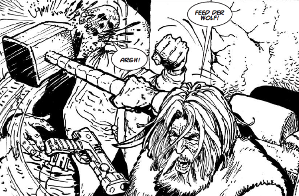

A short-lived retrospective series of alternate realities.
Art by Carlos Ezquerra
| Story Title | Parts | Pages | w indicates a wraparound coverCovers | Year(s) | Issues | Writer | Artist | Colourist | Letterer |
|---|---|---|---|---|---|---|---|---|---|
Linked to Rogue TrooperGunnar Survived the Quartz Zone Massacre | 1 | 6 | 0 | 2012 | 1771 | Andy Diggle | Colin Wilson | [b&w] | Simon Bowland |
Linked to The Visible ManThe Visible Man Returned to Earth | 1 | 6 | 0 | 2012 | 1771 | Pat Mills | Henry Flint | [b&w] | Ellie de Ville |
Linked to Strontium DogMax Bubba Hadn't Killed Wulf | 1 | 6 | 0 | 2012 | Reprints: M402 (supplement)1772 | Alan Grant | Carlos Ezquerra | [b&w] | Ellie de Ville |
Linked to Anderson Psi‑DivisionCassandra Anderson Hadn't Become a Judge | 1 | 6 | 0 | 2012 | Reprints: M388 (supplement)1773 | Alan Grant | Robin Smith | [b&w] | Ellie de Ville |
| year | episodes | pages |
| 2001 | 0 | 0 |
| 2002 | 0 | 0 |
| 2003 | 0 | 0 |
| 2004 | 0 | 0 |
| 2005 | 0 | 0 |
| 2006 | 0 | 0 |
| 2007 | 0 | 0 |
| 2008 | 0 | 0 |
| 2009 | 0 | 0 |
| 2010 | 0 | 0 |
| 2011 | 0 | 0 |
| 2012 | 4 | 24 |
| 2013 | 0 | 0 |
| 2014 | 0 | 0 |
| 2015 | 0 | 0 |
| 2016 | 0 | 0 |
| 2017 | 0 | 0 |
| 2018 | 0 | 0 |
| 2019 | 0 | 0 |
| 2020 | 0 | 0 |
| 2021 | 0 | 0 |